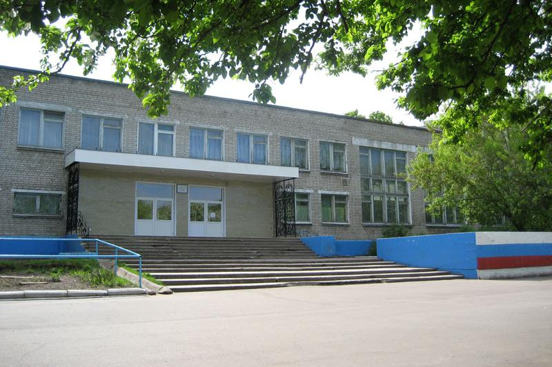

Меня зовут Рублев Андрей Валерьевич, я родился 17 июля 2003 года в городе Кирово-Чепецке, в Кировской области в семье, где папа - менеджер, а мама - учитель начальных классов.
1 Сентября 2010 года я пошёл в первый класс гимназии №1. Гимназия №1 побеждала в номинации "Лучшая школа Кировской области" и становилась победителем всероссийского конкурса "Лучшие школы России". Каждый год из стен гимназии выпускаются много учеников с медалями. Я в том числе закончил 11 классов с золотой медалью.
За время своего обучения я принимал участие в различных олимпиадах и конкурсах на разных уровнях: смотреть достижения
С 3 по 9 класс я занимался бальными танцами в Танцевально-спортивном клубе "Аэлита" и также участвовал в большом количестве конкурсов.

В данный момент я обучаюсь в Вятском государственном университете по специальности: Информационная безопасность телекоммуникационных систем.